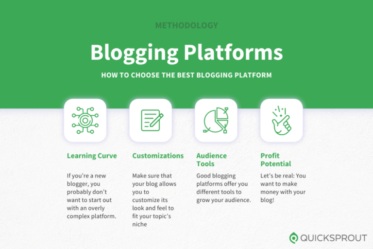

Want to jump straight to the answer? The best blogging platform for most people is WordPress with HostingerorWix
Building a great blog starts with choosing the right Platform - and there are only a handful truly worth considering.
Here are the five best options , Complete with in-depth reviews and a guide to help you decide which works best for you.
The Top 5 Best Blogging Platforms and Blog Sites for 2022

If you want to turn a profit on your blog, use WordPress,Wix, or Sqaurespace. You'll be in complete control of your site and everything that's on it.
Medium Or LinkedIn are great for hobby blogs and making connections. They are free ,but you don't get to choose how your blog looks ,and you can't really make money.
What makes these blogging Platforms great? Where could they be better? TO find out, we interviewed active users of each platform about where these platforms excel, and where they are falling Behind.
The Top Blogging Platforms and Blog Sites in Summary
Your unique needs will determine the blogging platform you ultimately choose. I can see how some people would naturally gravitate to Wix as the easiest drag-and-drop blogging tool. But WordPress has everything you need to get the most out of your blogging experience.
You'll be able to find what you're looking for using our list above and methodology to guide you.
How We Chose Which Products to Review
We chose our top five blogging platforms by focusing on four essential qualities:
Easy Learning Curve
Niche-Friendly customization
Audience-Building Tools
Profit Potential
Tip : You can jump down for an even more in-depth look at these criteria.
We researched dozens of the most popular and prominent blog builders and platforms using the four elements above as a way to judge the blog builder's quality.
This process involved "lighter" research that looked different from platform to platform. We also looked at each of the platform's features and tools across their payment plans if they had them.
By doing this, we were able to get a sense of each blog site's strengths,weaknesses, and target users.
Finally, we narrowed down our list from 12+ to five once we felt like we had a set of products that exemplified each of the criteria in unique ways.
How We Reviewed Each Product
The best way to understand the quality of a blogging platform is by talking to actual users.
They're the ones who have-on experience with the product, having spent anywhere from hours to years Building their blogs. They know what's working, what they love, and what needs to be improved.
- Used an advanced search query that gave us results for bloggers using the platform for Sqaurespace and Wix.
- Read featured lists of actual users officially Published by Wix and Sqaurespace.
- Scoured LinkedIn for prolific bloggers and publications to make sure that they had posted more than ten Medium posts and posted recently sometime in the past calender year.
- Went through Medium for bloggers and publications to make sure that they had posted more than ten Medium posts and posted recently sometime in the past calender year.
Once verified, we asked each user if they would be willing to either be surveyed or interviewed about their experience on the blog platform.